Welcome to Africa üåç
Africa is the second-largest continent both in size and population, with 54 recognized countries. It is rich in natural resources such as diamonds, gold, and oil, and is home to iconic landmarks like the Sahara, the world's largest hot desert, and the Nile River, the longest river on Earth.
This diverse continent features ecosystems that range from lush rainforests to vast savannas, providing habitats for extraordinary wildlife such as ü¶Å lions, üêò elephants, and ü¶ç gorillas. Africa is also known as the cradle of humankind, with the earliest evidence of human life discovered in Ethiopia.
Africa's cultural richness is equally impressive, with thousands of ethnic groups, languages, and traditions. In recent decades, the continent has experienced rapid urbanization and economic growth, with several countries becoming key regional powerhouses.
Day 1: Introduction to Africa
Africa is big and beautiful. It is the second-largest continent on Earth, covering about 30.3 million square kilometers. Africa has many different landscapes, like deserts, rainforests, savannas, and mountains.
The Sahara Desert is the world's largest hot desert, and the Congo Rainforest is the second-largest tropical rainforest.
People and Languages
Africa is home to over 1.3 billion people who speak more than 2,000 languages. This makes Africa a very diverse place with many different cultures, music, art, and traditions.
Old Man "Lucy"
A long time ago, scientists found the bones of a very old man named "Lucy" in East Africa. This shows that Africa is the place where humans first lived.
Treasures of the Earth
Africa has many natural treasures, like gold, diamonds, oil, and gas. These resources help many African countries grow and develop.
Challenges and Hopes
Africa faces some challenges like poverty, political instability, and health issues like malaria and HIV/AIDS. But many African countries are also growing fast and making progress in education and healthcare.
Slavery
A long time ago, many Africans were taken away from their homes and sold as slaves. This was a very sad and difficult time in Africa's history. But today, Africa is moving forward with hope and strength.
Day 2: Major Physical Features of Africa
Africa is a continent with diverse physical features that include lakes, rivers, mountains, and more.
Lakes
Some of the largest lakes in the world are found in Africa, including Lake Victoria, the largest lake in Africa, and Lake Tanganyika, the second deepest in the world.

Rivers
The Nile River, which many believe originates in Rwanda, is the longest river in the world. Other significant rivers include the Congo River and the Niger River.

Mountains
Africa has several major mountain ranges, including the Atlas Mountains in the north and the Drakensberg Mountains in the south. Mount Kilimanjaro in Tanzania is the highest peak in Africa.

Great Rift Valley
The Great Rift Valley is a significant geological feature that runs from Lebanon to Mozambique, passing through East Africa.

Oceans
Africa is surrounded by several major bodies of water, including the Mediterranean Sea to the north, the Red Sea to the northeast, the Indian Ocean to the southeast, and the Atlantic Ocean to the west.

Historical Figures
Africa has a rich history with many notable figures, such as Nelson Mandela, who played a key role in ending apartheid in South Africa.

Real Facts
Africa is known for its rich biodiversity, including numerous species of flora and fauna found nowhere else on Earth. It is also the birthplace of humanity, with evidence of the earliest humans found on this continent.
üåç Day 3: Exploring East Africa
Introduction to East Africa
East Africa is a beautiful region with many different countries. It's famous for its stunning landscapes, from tall mountains to deep lakes. The people of East Africa have rich cultures and histories, making the area very special.
How Many Countries in East Africa?
There are 13 countries in East Africa, including well-known ones like Kenya, Tanzania, and Uganda. Each country has its own unique culture and attractions.
What is the Biggest Country in East Africa?
The largest country in East Africa by area is Tanzania, known for its huge national parks and Mount Kilimanjaro, Africa's highest mountain.
Main Touristic Areas in East Africa
East Africa is famous for its wildlife and natural beauty. Popular touristic areas include:
- Serengeti National Park (Tanzania): Famous for the Great Migration of wildebeest.
- Mount Kilimanjaro (Tanzania): The highest mountain in Africa.
- Maasai Mara National Reserve (Kenya): Known for its lions and other wildlife.
- Lake Victoria: The largest lake in Africa, shared by Kenya, Uganda, and Tanzania.
üåç Countries, Flags, and Capital Cities of East Africa
| Country | Flag | Capital City |
|---|---|---|
| Kenya üá∞üá™ |  |
Nairobi |
| Tanzania üáπüáø |  |
Dodoma |
| Uganda üá∫üᨠ|  |
Kampala |
| Rwanda üá∑üẠ|  |
Kigali |
| Burundi üáßüáÆ |  |
Gitega |
| South Sudan üá∏üá∏ |  |
Juba |
| Ethiopia üá™üáπ | 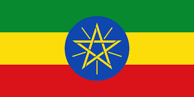 | Addis Ababa |
| Somalia üá∏üᥠ| 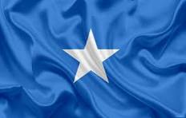 | Mogadishu |
| Eritrea üá™üá∑ |  |
Asmara |
| Djibouti üá©üáØ |  |
Djibouti City |
| Comoros üá∞üá≤ | 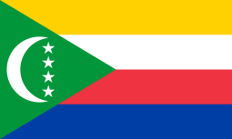 | Moroni |
| Seychelles üá∏üá® | 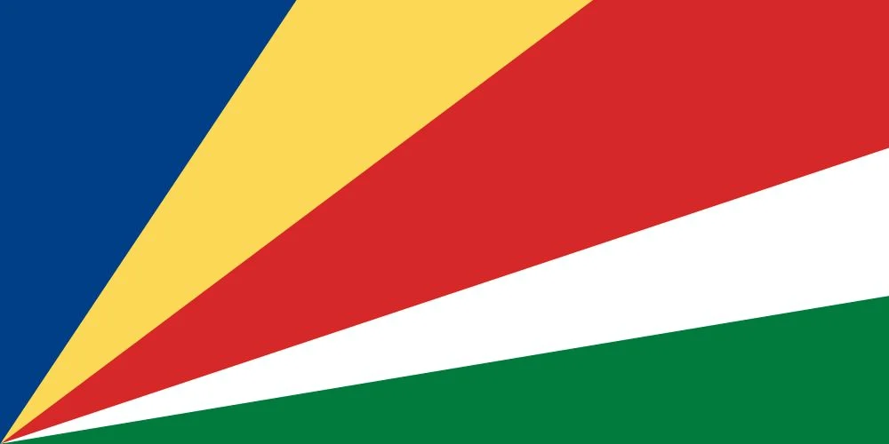 | Victoria |
| Madagascar üá≤üᨠ|  |
Antananarivo |
üéâ Culture and Languages
East Africa is rich in culture and languages. Each country has its own traditions, music, dances, and festivals. Swahili is a common language spoken in many East African countries like Kenya and Tanzania. The region is also known for colorful festivals and unique traditional clothing.
üá∑üẠRwanda
Introduction: Rwanda, the "Land of a Thousand Hills," is known for its mountainous terrain. The country has experienced a remarkable transformation in recent years.
Military Strength: Rwanda has a disciplined military that plays a big role in peacekeeping missions across Africa.
Notable Figure: President Paul Kagame is praised for his leadership in rebuilding the country.
Key Attractions:
- Kigali Convention Centre: A modern architectural marvel.
- Nyungwe Forest National Park: A large mountain rainforest, home to chimpanzees.
- Amahoro National Stadium: Rwanda’s largest stadium for sports and events.
Kigali: Kigali, the capital, is one of the cleanest and safest cities in Africa.


Kenya
Kenya:
Kenya is known for its diverse landscapes and rich cultural heritage. It is a major tourist destination with iconic wildlife reserves and beautiful beaches.
Key Attractions:
- Maasai Mara: Renowned for its lion population and annual wildebeest migration.
- Mount Kenya: The second-highest peak in Africa, ideal for trekking.
KENYA: Kenya's capital city is called Nairobi, is a vibrant city that serves as a gateway to the country’s natural wonders.

Tanzania
TANZANIA:
Tanzania is home to some of Africa’s most famous national parks and Mount Kilimanjaro, the continent’s highest peak.
Key Attractions:
- Serengeti National Park: Famous for the Great Migration of wildebeest and zebras.
- Zanzibar: An exotic island with beautiful beaches and rich history.
Notes: Dodoma, the capital, is the political hub, while Dar es Salaam remains the major economic center.


Uganda
Introduction: Uganda is known for its stunning landscapes, including the source of the Nile River and mountain gorillas.
Key Attractions:
- Bwindi Impenetrable Forest: A sanctuary for endangered mountain gorillas.
- Lake Victoria: The largest lake in Africa, shared with neighboring countries.
Notes: Kampala, the capital, is the cultural and political heart of Uganda.

Burundi
Introduction: Burundi is a small country with a rich cultural heritage, beautiful landscapes, and a tumultuous history.
Key Attractions:
- Lake Tanganyika: The world’s second-deepest lake, ideal for fishing and exploring.
- Kibira National Park: A protected area home to various wildlife species.
Notes: Gitega, the new capital, was designated to promote decentralization and national unity.

South Sudan
Introduction: South Sudan, the world’s youngest nation, gained independence in 2011. It is rich in cultural diversity and natural resources.
Key Attractions:
- Sudd Swamp: One of the largest wetlands in the world, crucial for biodiversity.
- Nimule National Park: Offers a unique wildlife experience along the White Nile.
Notes: Juba, the capital, is a rapidly growing city, despite the ongoing challenges of nation-building.


Ethiopia
Introduction: Ethiopia is one of the oldest nations in the world, with a rich history and diverse cultures. It’s known for its ancient monuments and rugged landscapes.
Key Attractions:
- Lalibela: Famous for its rock-hewn churches, a UNESCO World Heritage site.
- Simien Mountains: A breathtaking range that offers trekking and wildlife viewing.
Notes: Addis Ababa, the capital, is the political and diplomatic hub of Africa, hosting the African Union’s headquarters.

Somalia
Introduction: Somalia, located on the Horn of Africa, is known for its long coastline, rich maritime history, and resilient people.
Key Attractions:
- Laas Geel: Ancient rock art dating back thousands of years.
- Mogadishu: The capital, with its historic sites and beautiful beaches.
Notes: Despite its challenges, Somalia has a vibrant culture and a strong sense of community.


Eritrea
Introduction: Eritrea, located in the Horn of Africa, has a unique blend of African and Mediterranean influences.
Key Attractions:
- Asmara: The capital, known for its well-preserved colonial Italian architecture.
- Dahlak Archipelago: A group of islands in the Red Sea, ideal for diving and snorkeling.
Notes: Eritrea has a long coastline along the Red Sea, making it strategically significant.
Djibouti
Introduction: Djibouti is a small but strategically important country located at the crossroads of Africa and the Middle East.
Key Attractions:
- Lake Assal: The lowest point in Africa and one of the saltiest bodies of water in the world.
- Gulf of Tadjoura: Known for its coral reefs and marine life.
Notes: Djibouti City, the capital, is a hub for international shipping and military presence.


Comoros
Introduction: The Comoros is a small island nation in the Indian Ocean, known for its beautiful beaches, volcanic mountains, and rich culture.
Key Attractions:
- Mount Karthala: An active volcano and the highest point in the Comoros.
- Mitsamiouli Beach: A pristine beach popular for swimming and snorkeling.
Notes: Moroni, the capital, is a charming city with a mix of African, Arab, and French influences.

Seychelles
Introduction: Seychelles is an archipelago of 115 islands in the Indian Ocean, known for its beautiful beaches, coral reefs, and nature reserves.
Key Attractions:
- Anse Source d'Argent: One of the most photographed beaches in the world.
- Vallée de Mai: A UNESCO World Heritage site home to the famous Coco de Mer palm.
Notes: Victoria, the capital, is one of the smallest capitals in the world, offering a relaxed and picturesque setting.

Madagascar
Introduction: Madagascar is the fourth largest island in the world, known for its unique wildlife and biodiversity.
Key Attractions:
- Avenue of the Baobabs: A famous group of ancient baobab trees.
- Andasibe-Mantadia National Park: Home to various lemur species and other endemic wildlife.
Notes: Antananarivo, the capital, is the political and cultural center of Madagascar.
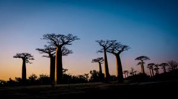
Now You're Ready to Take the first Quiz!
Head over to the home page to get started with your first or simply click button below!
Day 4: Exploring West Africa
Introduction to West Africa
West Africa is a lively and colorful part of Africa. It's famous for its music, dances, and festivals. People here are known for their warm hospitality and rich traditions.
How Many Countries in West Africa?
There are 16 countries in West Africa. Some of the well-known countries include Nigeria, Ghana, and Senegal. Each of these countries has its own unique culture and history.
What is the Biggest Country in West Africa?
The biggest country in West Africa by area is Niger. However, Nigeria has the largest population and is very influential in the region.

Main Touristic Areas in West Africa
West Africa has many exciting places to visit. Here are some popular touristic areas:
- Cape Coast Castle (Ghana): A historic castle that played a role in the transatlantic slave trade.
- Djenne (Mali): Known for its beautiful mud-brick architecture.
- Yankari National Park (Nigeria): A wildlife park with lots of animals like elephants and baboons.
- Lake Volta (Ghana): One of the largest man-made lakes in the world.
Countries, Their Flags, and Capital Cities in West Africa
| Country | Flag | Capital City |
|---|---|---|
| Nigeria |  |
Abuja |
| Ghana |  |
Accra |
| Senegal | 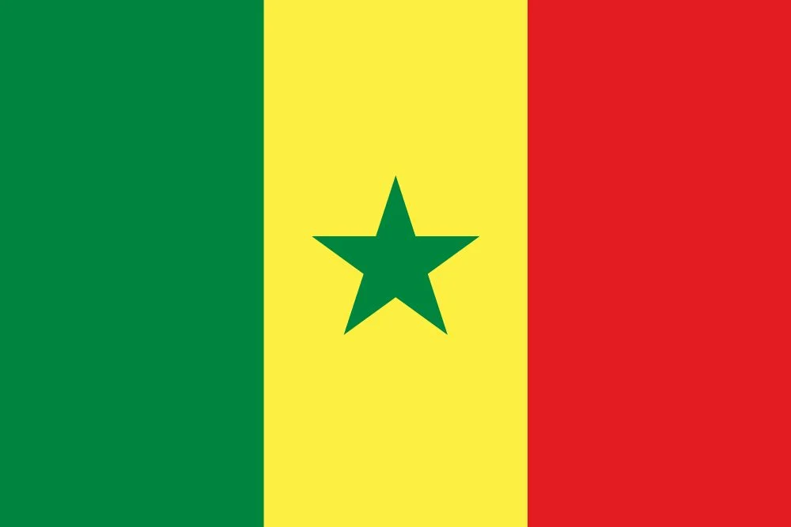 | Dakar |
| Ivory Coast |  |
Yamoussoukro |
| Mali |  |
Bamako |
| Niger |  |
Niamey |
| Burkina Faso |  |
Ouagadougou |
| Guinea | 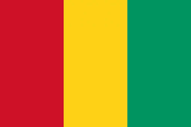 | Conakry |
| Benin | 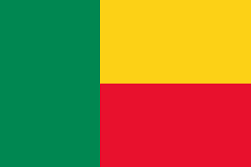 | Porto-Novo |
| Sierra Leone |  |
Freetown |
| Togo |  |
Lomé |
| Liberia |  |
Monrovia |
| Mauritania |  |
Nouakchott |
| Gambia |  |
Banjul |
| Cape Verde |  |
Praia |
| Guinea-Bissau |  |
Bissau |
Countries in Focus
Nigeria

Nigeria is a country with diverse cultures, languages, and landscapes. It's known for its rich history and vibrant cities like Lagos.
Ghana

Ghana is famous for its gold resources and historical sites like Cape Coast Castle, which played a significant role in the transatlantic slave trade.
Senegal
Senegal is known for its music, especially the popular genre called Mbalax. The capital, Dakar, is a vibrant city with a rich culture.
Ivory Coast

Ivory Coast is the world's largest producer of cocoa beans. Its capital, Yamoussoukro, is known for its large basilica.
Mali

Mali is famous for its ancient city of Timbuktu, which was once a center of learning and culture in Africa.
Niger

Niger is home to the Sahara Desert, offering breathtaking views of sand dunes and oases.
Burkina Faso
Burkina Faso is known for its music and film festivals, particularly the FESPACO film festival held in Ouagadougou.
Benin

Benin is known for its historical kingdom of Dahomey, and its capital, Porto-Novo, showcases vibrant culture and history.
Sierra Leone

Sierra Leone is known for its beautiful beaches and the tragic history of the civil war, which the country is still recovering from.
Togo

Togo is a narrow strip of land with a diverse landscape, from beaches to mountains. Its capital, Lomé, is a bustling city.
Liberia
Liberia is Africa's oldest republic, founded by freed American slaves. The country is known for its historical significance and beautiful coastline.
Mauritania
Mauritania is largely covered by the Sahara Desert, and its economy is primarily based on mining and fishing.
Gambia

Gambia is the smallest country in mainland Africa, known for its river, which flows through the entire country and gives it its name.
Cape Verde
Cape Verde is an island nation known for its Creole Portuguese-African culture, beautiful beaches, and volcanic landscapes.
Guinea-Bissau

Guinea-Bissau is known for its national parks and wildlife, particularly the Orango Islands National Park, which is a haven for rare species.
Day 5: Exploring North Africa
Introduction to North Africa
North Africa is known for its vast deserts and ancient civilizations. This region is home to some of the world's oldest and most famous historical sites, like the pyramids of Egypt.
How Many Countries in North Africa?
There are 6 countries in North Africa. Some of the well-known countries include Egypt, Morocco, and Algeria. Each country has a rich history and unique culture.
What is the Biggest Country in North Africa?
The biggest country in North Africa by area is Algeria. It's the largest country in Africa and is known for its Sahara Desert.
Main Touristic Areas in North Africa
North Africa has many famous places to visit. Here are some popular touristic areas:
- Pyramids of Giza (Egypt): Ancient pyramids built by the Pharaohs.

The Pyramids of Giza, one of the Seven Wonders of the Ancient World.
- Marrakech (Morocco): Known for its vibrant markets and beautiful palaces.
Marrakech is famous for its lively souks and the historical Medina.
- Carthage (Tunisia): Ancient ruins of a powerful city that once rivaled Rome.

The ruins of Carthage, a testament to the city's ancient glory.
- Sahara Desert: The largest hot desert in the world, covering much of North Africa.
The vast and mesmerizing dunes of the Sahara Desert.
Countries, Their Flags, and Capital Cities in North Africa
| Country | Flag | Capital City |
|---|---|---|
| Egypt |  |
Cairo |
| Morocco | 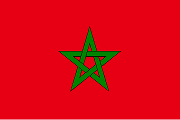 | Rabat |
| Algeria |  |
Algiers |
| Tunisia |  |
Tunis |
| Libya |  |
Tripoli |
| Sudan |  |
Khartoum |
Culture and Languages
North Africa has a mix of Arab and Berber cultures. People here speak Arabic and French, among other languages. The region is known for its beautiful architecture, traditional music, and delicious food like couscous and tagine.
Egypt
Egypt is known for its ancient civilization and iconic monuments, including the Pyramids of Giza and the Great Sphinx.
The Pyramids of Giza are a wonder of the ancient world and a must-see.

The Nile River, the lifeblood of Egypt for millennia.
Morocco
The bustling markets of Marrakech are a shopper's paradise.
The Atlas Mountains provide breathtaking views and hiking opportunities.
Algeria
Algeria is the largest country in Africa, known for its Saharan landscapes and the historic city of Algiers.
The Sahara Desert in Algeria offers endless adventures for explorers.
Algiers, the white city, is rich in history and culture.
Tunisia
Carthage was once a powerful city-state that rivaled Rome.
Tunisia's beaches are perfect for relaxation and sunbathing.
Libya
Libya is known for its ancient Greek and Roman sites, as well as the vast Sahara Desert.
Libya's ancient ruins tell stories of its rich and varied history.

The Libyan Desert is an expanse of sand and solitude.
Sudan
Sudan is famous for its ancient Nubian pyramids and rich cultural heritage along the Nile River.

Sudan's pyramids are lesser-known but equally magnificent.
The Nile in Sudan is a cultural and historical lifeline.
Did You Know?
North Africa is not only known for its rich history and cultural diversity but also for being a strategic point during ancient times. The region has seen the rise and fall of many empires, including the Carthaginian, Roman, and Ottoman empires.
Additionally, the Sahara Desert, which covers much of North Africa, is the third-largest desert in the world after Antarctica and the Arctic. Despite its harsh environment, the Sahara is home to unique ecosystems and species adapted to extreme conditions.
Day 6: Exploring Central Africa
Introduction to Central Africa
Central Africa is known for its dense rainforests, diverse wildlife, and vibrant cultures. It's home to many unique animals like gorillas and elephants.
How Many Countries in Central Africa?
There are 9 countries in Central Africa. Some of them include the Democratic Republic of the Congo, Cameroon, and Gabon.
What is the Biggest Country in Central Africa?
The Democratic Republic of the Congo is the largest country in Central Africa, known for its vast rainforests and mineral resources.
Main Touristic Areas in Central Africa
- Virunga National Park (DR Congo): Famous for mountain gorillas.

Mountain gorillas in Virunga National Park, DR Congo.
- Lobéké National Park (Cameroon): Known for diverse wildlife.

Lobéké National Park, Cameroon, a haven for wildlife.
- Odzala-Kokoua National Park (Republic of Congo): Offers gorilla and forest elephant sightings.
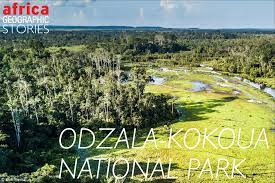
A glimpse of the dense forests of Odzala-Kokoua, Republic of Congo.
- Dzanga-Sangha Reserve (Central African Republic): Rich in biodiversity and home to forest elephants.
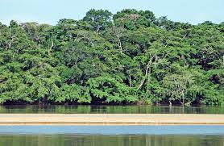
Forest elephants in Dzanga-Sangha Reserve, Central African Republic.

The vast and dense rainforests of the Democratic Republic of the Congo.
The Democratic Republic of the Congo is home to the Congo Rainforest, the second-largest tropical forest in the world, known for its incredible biodiversity.

Mount Cameroon, an active volcano and the highest point in West and Central Africa.
Cameroon is often referred to as "Africa in miniature" because it features all major climates and vegetation types of the continent.

The Congo River flowing through Brazzaville, the capital of the Republic of Congo.
The Republic of Congo is known for the Congo River, the second-longest river in Africa, which is crucial for transportation and local livelihoods.

Manovo-Gounda St Floris National Park, a UNESCO World Heritage site in the Central African Republic.
The Central African Republic is rich in wildlife and protected areas, with national parks like Manovo-Gounda St Floris being critical for conservation.
Lake Chad, a vital water source for millions of people in the region.
Chad is home to Lake Chad, which supports over 30 million people in four countries and is an essential source of water in a largely arid region.

The beautiful landscapes of Bioko Island, Equatorial Guinea.
Equatorial Guinea's Bioko Island is known for its stunning beaches, volcanic landscapes, and rich biodiversity, including endangered primates.
Loango National Park, often called "Africa's Last Eden" in Gabon.
Gabon is famous for its national parks, which cover almost 11% of the country, with Loango National Park being one of the most pristine and biodiverse areas.
São Tomé Island, the larger of the two islands making up São Tomé and Príncipe.
São Tomé and Príncipe are known for their stunning natural beauty, including lush rainforests, volcanic landscapes, and unique wildlife.

Kalandula Waterfalls, one of the largest and most spectacular waterfalls in Angola.
Angola is known for its dramatic landscapes, including the Kalandula Waterfalls, one of the largest waterfalls in Africa, and a major natural attraction.
Countries, Their Flags, and Capital Cities in Central Africa
| Country | Flag | Capital City |
|---|---|---|
| Democratic Republic of the Congo | 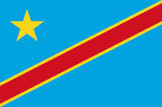 | Kinshasa |
| Cameroon | 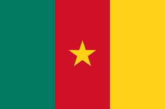 | Yaoundé |
| Republic of Congo |  |
Brazzaville |
| Central African Republic | 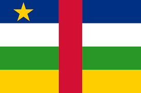 | Bangui |
| Chad |  |
N'Djamena |
| Equatorial Guinea |  |
Malabo |
| Gabon |  |
Libreville |
| São Tomé and Príncipe |  |
São Tomé |
| Angola |  |
Luanda |
Culture and Languages
Central Africa has a rich cultural heritage with many ethnic groups speaking various languages. French is commonly spoken, along with local languages like Lingala and Kikongo.
Now You're Ready to Take the Second Quiz!
Head over to the home page to get started with your second quiz! or simple click this button below
Day 7: Exploring Southern Africa
Introduction to Southern Africa
Southern Africa is a diverse region known for its deserts, grasslands, and breathtaking landscapes. It's home to iconic wildlife like lions, elephants, and rhinos.
How Many Countries in Southern Africa?
There are 16 countries in Southern Africa. Some of them include South Africa, Botswana, and Zimbabwe.
What is the Biggest Country in Southern Africa?
South Africa is the largest country in Southern Africa by both area and population. It's known for its cultural diversity and economic strength.
- Kruger National Park (South Africa): Famous for its wildlife safaris and beautiful landscapes.

Kruger National Park is one of Africa's largest game reserves, offering a chance to see the Big Five: lions, leopards, rhinos, elephants, and buffalo.
- Victoria Falls (Zambia/Zimbabwe): One of the largest and most famous waterfalls in the world.
Victoria Falls, also known as "The Smoke That Thunders," is a UNESCO World Heritage site and a natural wonder of the world.
- Okavango Delta (Botswana): A unique inland delta that attracts wildlife and tourists.
The Okavango Delta is a vast and unique ecosystem, providing a haven for wildlife and offering stunning landscapes and boat safaris.

- Namib Desert (Namibia): One of the oldest deserts with unique landscapes and wildlife.
The Namib Desert is famous for its towering sand dunes, some of the highest in the world, and its stark, otherworldly beauty.

Countries, Their Flags, and Capital Cities in Southern Africa
| Country | Flag | Capital City |
|---|---|---|
| South Africa |  |
Pretoria, Cape Town, Bloemfontein |
| Botswana | Gaborone | |
| Zimbabwe | 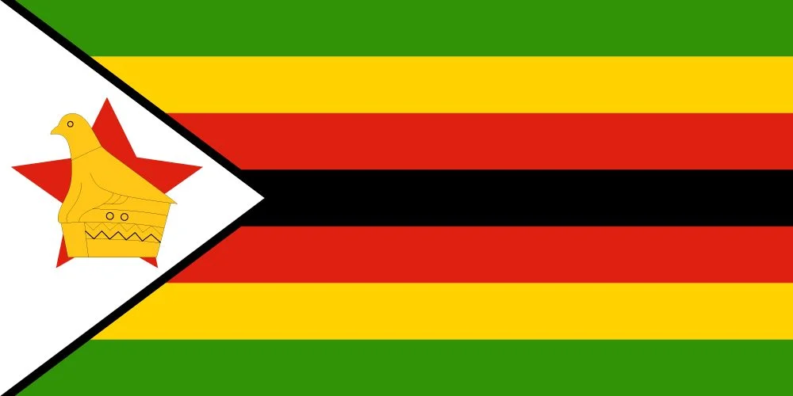 | Harare |
| Zambia |  |
Lusaka |
| Namibia |  |
Windhoek |
| Lesotho |  |
Maseru |
| Eswatini (Swaziland) | 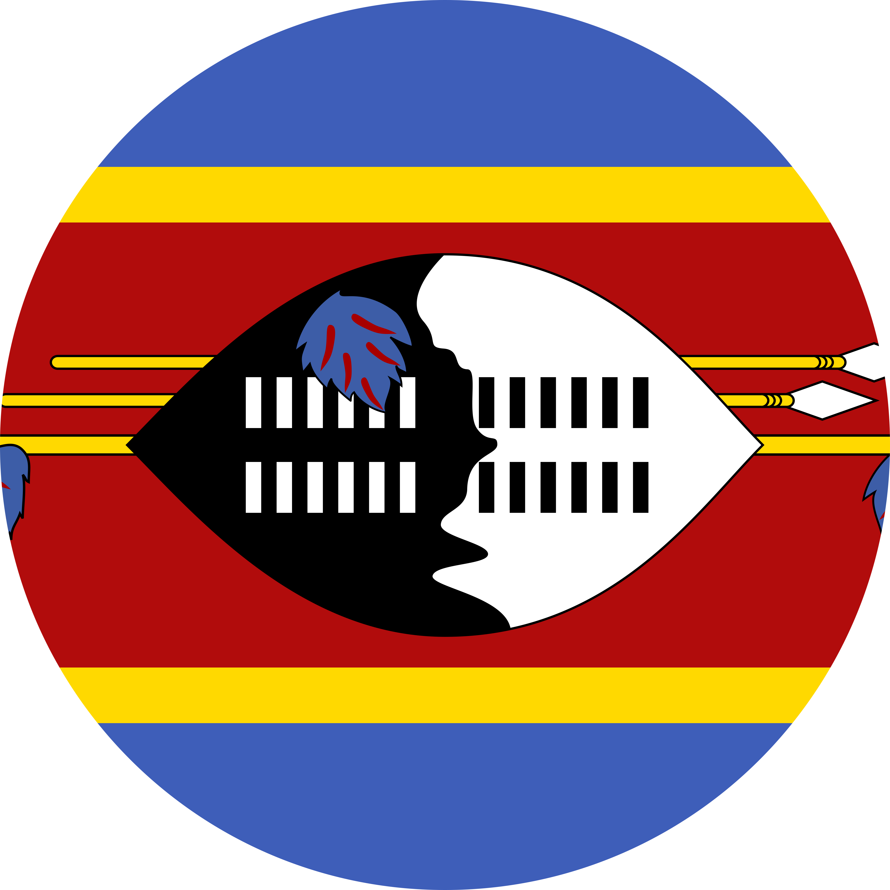 | Mbabane |
| Angola | |
Luanda |
| Mozambique | 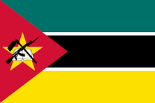 | Maputo |
| Malawi | 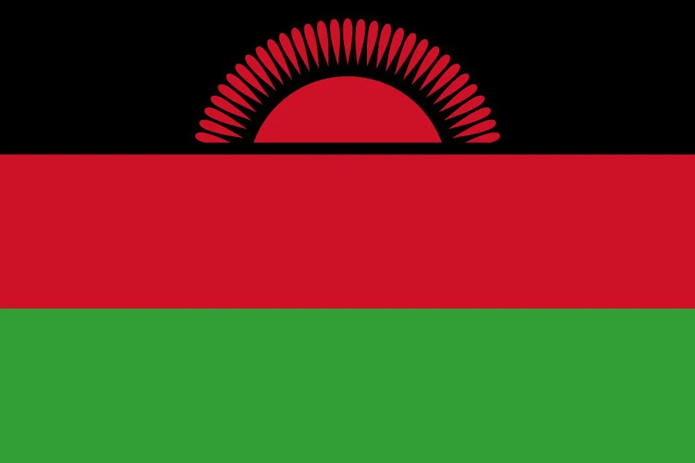 | Lilongwe |
| Madagascar | |
Antananarivo |
| Mauritius |  |
Port Louis |
| Seychelles | Victoria | |
| Democratic Republic of the Congo | Kinshasa | |
| Tanzania | |
Dodoma |
| Comoros | Moroni |
Botswana

Culture
Botswana is known for its rich cultural heritage, especially the traditional music and dance of the Tswana people. The country has a strong tradition of preserving its cultural practices.
Main Attractions
Okavango Delta: A UNESCO World Heritage site and one of the world's largest inland deltas, offering unique wildlife experiences.
Chobe National Park: Known for its large elephant population and boat safaris on the Chobe River.
Makgadikgadi Pans: One of the largest salt flats in the world, offering unique landscapes and wildlife during the wet season.
Botswana is considered one of Africa's most stable and economically prosperous countries, with a strong focus on conservation.
Culture and Languages
Southern Africa has diverse cultures influenced by indigenous traditions and colonial histories. Languages spoken include English, Afrikaans, and local languages like Zulu and Shona.
South Africa

Culture
South Africa is known as the "Rainbow Nation" due to its multicultural diversity. It has 11 official languages, including Zulu, Xhosa, and Afrikaans.
Main Attractions
Table Mountain: A flat-topped mountain forming a prominent landmark overlooking the city of Cape Town.
Robben Island: The island where Nelson Mandela was imprisoned for 18 of his 27 years in jail. It's now a museum and UNESCO World Heritage site.
Kruger National Park: One of Africa's largest game reserves, offering a chance to see the Big Five.
South Africa's wine regions in the Western Cape are among the best in the world, producing globally recognized wines.
Botswana
Culture
Botswana is known for its rich cultural heritage, especially the traditional music and dance of the Tswana people. The country has a strong tradition of preserving its cultural practices.
Main Attractions
Okavango Delta: A UNESCO World Heritage site and one of the world's largest inland deltas, offering unique wildlife experiences.
Chobe National Park: Known for its large elephant population and boat safaris on the Chobe River.
Makgadikgadi Pans: One of the largest salt flats in the world, offering unique landscapes and wildlife during the wet season.
Botswana is considered one of Africa's most stable and economically prosperous countries, with a strong focus on conservation.
Zimbabwe
Culture
Zimbabwe has a rich cultural history, with influences from the Shona and Ndebele people. The country is known for its traditional music, art, and stone sculptures.
Main Attractions
Victoria Falls: One of the most famous waterfalls in the world, shared with Zambia.
Great Zimbabwe Ruins: The remains of an ancient city, offering a glimpse into the region's historical significance.
Hwange National Park: Known for its large elephant herds and diverse wildlife.
Zimbabwe is home to one of the Seven Natural Wonders of the World, Victoria Falls, which is a major tourist attraction.
Namibia
Culture
Namibia's culture is a mix of indigenous traditions and colonial influences, with significant contributions from the Himba and Herero people.
Main Attractions
Sossusvlei: Famous for its high red dunes and salt pans, located in the Namib Desert.
Etosha National Park: One of Africa's greatest wildlife parks, known for its salt pan and diverse animal species.
Fish River Canyon: The second largest canyon in the world, offering stunning views and hiking opportunities.
Namibia is one of the least densely populated countries in the world, offering vast landscapes and untouched wilderness.
Angola

Culture
Angola's culture is heavily influenced by Portuguese colonial history, with a vibrant music scene known for genres like semba and kizomba.
Main Attractions
Kissama National Park: A protected area known for its diverse wildlife and successful animal rehabilitation programs.
Kalandula Falls: One of the largest waterfalls in Africa, located in the Malanje province.
Fortress of São Miguel: A historic fort in Luanda, offering insights into Angola's colonial past.
Angola has one of the fastest growing economies in Africa, driven by its oil and diamond industries.
Mozambique

Culture
Mozambique's culture is a blend of African, Arab, and Portuguese influences, evident in its music, dance, and cuisine.
Main Attractions
Bazaruto Archipelago: A group of islands known for their pristine beaches, coral reefs, and marine life.
Gorongosa National Park: A national park known for its biodiversity and conservation efforts.
Island of Mozambique: A UNESCO World Heritage site with historic buildings and a rich cultural heritage.
Mozambique's coastline stretches for over 2,500 km, offering some of the best diving and snorkeling spots in the world.
Malawi
Culture
Malawi is known for its friendly people, earning it the nickname "The Warm Heart of Africa." The culture is centered around traditional music, dance, and art.
Main Attractions
Lake Malawi: Africa's third largest lake, known for its clear waters, sandy beaches, and diverse fish species.
Mount Mulanje: A large granite massif offering hiking opportunities and stunning views.
Liwonde National Park: A popular park for wildlife safaris, especially known for its elephant and hippo populations.
Lake Malawi is home to more species of fish than any other lake in the world, making it a biodiversity hotspot.
Madagascar
Culture
Madagascar's culture is a unique blend of African, Asian, and French influences, with strong ties to traditional Malagasy customs and beliefs.
Main Attractions
Avenue of the Baobabs: A famous road lined with towering baobab trees, a symbol of Madagascar's unique flora.
Ranomafana National Park: A rainforest park known for its rich biodiversity, including several species of lemurs.
Tsingy de Bemaraha: A UNESCO World Heritage site featuring unique limestone formations and a variety of endemic species.
Madagascar is home to about 5% of the world's plant and animal species, most of which are found nowhere else on Earth.
Tanzania
Culture
Tanzania is known for its diverse cultural heritage, with influences from the Swahili coast, Arab traders, and various ethnic groups like the Maasai and Chaga.
Main Attractions
Serengeti National Park: Famous for the annual migration of over a million wildebeest and thousands of zebras.
Mount Kilimanjaro: Africa's highest mountain, a popular destination for trekking and mountaineering.
Zanzibar: An archipelago known for its historic Stone Town, pristine beaches, and spice plantations.
Tanzania is a member of both the Southern African Development Community (SADC) and the East African Community (EAC), reflecting its geographical and political significance in the region.
Democratic Republic of the Congo (DRC)
Culture
The DRC is culturally rich, with over 200 ethnic groups. It is known for its vibrant music scene, particularly the Congolese rumba, and its diverse traditions and languages.
Main Attractions
Virunga National Park: Africa's oldest national park, home to mountain gorillas, active volcanoes, and diverse wildlife.
Kinshasa: The bustling capital city, known for its lively music and art scene.
Lake Kivu: A large lake offering stunning views and opportunities for water activities, shared with Rwanda.
The DRC is incredibly rich in natural resources, including minerals like cobalt and diamonds, which play a significant role in the global economy.
Comoros
Culture
Comoros has a unique blend of African, Arab, and French cultural influences. The islands are known for their traditional music, dance, and vibrant festivals.
Main Attractions
Mount Karthala: An active volcano and the highest point in Comoros, offering hiking opportunities and breathtaking views.
Moheli Marine Park: A marine park known for its coral reefs, sea turtles, and diverse marine life.
Chomoni Beach: A pristine beach with white sand and clear waters, popular for relaxation and water activities.
Note: Comoros is one of the world's largest producers of ylang-ylang, a key ingredient in many perfumes.
Did you know?
Tanzania is a member of both the Southern African Development Community (SADC) and the East African Community (EAC), due to its unique geographical position connecting the two regions.
Day 8: Exploring Islands of Africa
Introduction to Islands of Africa
The islands of Africa are scattered across the Indian Ocean and the Atlantic Ocean. They are known for their beautiful beaches, rich marine life, and unique cultures.
How Many Islands of Africa?
There are numerous islands belonging to Africa. Some of the well-known ones include Madagascar, Mauritius, Seychelles, Cape Verde, and many more.
Main Touristic Areas on Islands of Africa
Madagascar
Famous for its biodiversity and unique wildlife, like lemurs.
Madagascar offers unique experiences with its extraordinary wildlife, including lemurs, chameleons, and baobab trees.
Mauritius
Known for its stunning beaches, luxury resorts, and vibrant culture.
Mauritius is a haven for beach lovers, with clear waters, coral reefs, and a blend of Indian, African, and French cultures.
Seychelles
A paradise for beach lovers and nature enthusiasts with pristine beaches and crystal-clear waters.
Seychelles is an archipelago of 115 islands, known for their untouched natural beauty, including the famous Anse Source d'Argent beach.
Zanzibar (Tanzania)
A historic island with spice tours, beautiful beaches, and cultural experiences.
Zanzibar, also known as the "Spice Island," offers rich cultural history, beautiful beaches, and traditional markets.
São Tomé and Príncipe
Known for their lush rainforests, volcanic peaks, and colonial architecture.

São Tomé and Príncipe are lesser-known gems, offering unspoiled nature, cocoa plantations, and historic colonial buildings.
Comoros
Offers a blend of African, Arab, and French cultures, with beautiful beaches and coral reefs.
Comoros is a volcanic archipelago, with rich marine biodiversity and a unique mix of cultures.
Réunion (France)
A volcanic island with dramatic landscapes, hiking trails, and cultural diversity.

Réunion offers an adventurous landscape with active volcanoes, waterfalls, and hiking trails, alongside a blend of French, African, and Indian cultures.
Mayotte (France)
Known for its rich marine life, including coral reefs and lagoons.
Mayotte is renowned for its lagoons, coral reefs, and the opportunity to explore underwater life.
Canary Islands (Spain)
Famous for their diverse landscapes, from beaches to volcanic mountains.

The Canary Islands offer a unique mix of beach resorts and volcanic landscapes, with a mild climate year-round.
Madeira (Portugal)
Renowned for its wine, botanical gardens, and stunning coastal scenery.

Madeira is famous for its lush gardens, rugged coastline, and the production of world-renowned Madeira wine.
Bioko (Equatorial Guinea)
Known for its rich biodiversity and unique cultural heritage.
Bioko is an island rich in wildlife, including monkeys, and offers a glimpse into Equatorial Guinea's diverse cultures.
üåéCountries, Their Flags, and Capital Cities on Islands of Africa
| Country/Island | Flag | Capital/City |
|---|---|---|
| Madagascar | |
Antananarivo |
| Mauritius | |
Port Louis |
| Seychelles | Victoria | |
| Cape Verde | |
Praia |
| São Tomé and Príncipe | |
São Tomé |
| Comoros | Moroni | |
| Réunion (France) |  |
Saint-Denis |
| Mayotte (France) | |
Mamoudzou |
| Canary Islands (Spain) |  |
Las Palmas / Santa Cruz de Tenerife |
| Madeira (Portugal) |  |
Funchal |
| Bioko (Equatorial Guinea) | |
Malabo |
Culture and Languages
The islands of Africa have diverse cultures influenced by African, European, and Asian traditions. Creole languages, French, Spanish, Portuguese, and English are commonly spoken, reflecting their colonial histories.
Summary and Review
Congratulations on completing your journey through Africa! Let's review what you've learned:
Highlights of Your Journey
-
North Africa: Explored the rich history, including the Pyramids of Egypt and ancient cities.which country flag`s below?
-
West Africa: Discovered the vibrant cultures and festivals in countries like Nigeria and Ghana.which country flag`s below?
-
East Africa: Explored the diverse landscapes, from the Serengeti to Mount Kilimanjaro.which country flag`s below?
-
Southern Africa: Learned about the natural wonders and wildlife, including safaris in South Africa.which country flag`s below?
- Islands of Africa: Explored the unique islands, from Madagascar to Seychelles, with beautiful beaches and rich marine life.which country flag`s below?
Did You Know?
üåç Africa is the second-largest continent in the world, both in size and population.
üêò The Serengeti in Tanzania is home to one of the largest wildlife migrations on earth.
üóø The Great Pyramid of Giza is the oldest of the Seven Wonders of the Ancient World and the only one to remain largely intact.
What Did You Enjoy the Most?
Think about your favorite parts of Africa. Was it the pyramids of Egypt, the safaris in Kenya, or the beautiful beaches of Mauritius?
Do you really plan to explore africa!
what would you like to explore when you got a chance to come to Africa.
How did you enjoyed this ? Time to get quiz,general test and exam.
Now You're Ready to Take the third Quiz!
Head over to the home page to get started with your third quiz! as well as General Test and Exam you may start by this buuton below